Entenda o vento
Conheça o equipamento, o ambiente e os fundamentos para começar com consciência.
BASE & SEGURANÇA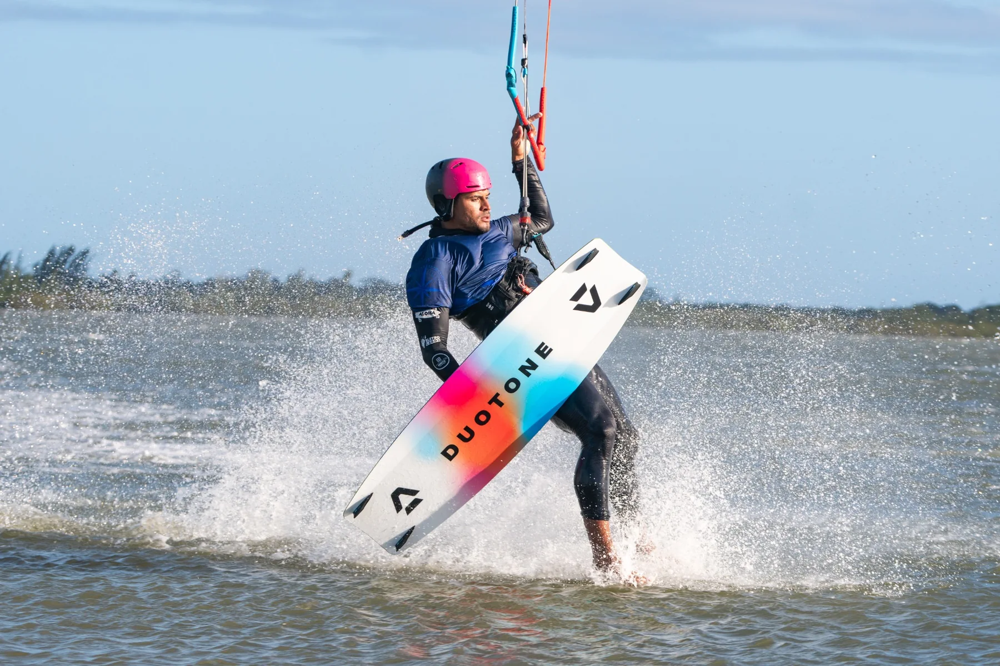
PRAINHA · AQUIRAZ · CEARÁ
Faça aulas de kitesurf na Prainha, em Aquiraz, Ceará, com Raul. Aprenda no seu ritmo, conheça os fundamentos do esporte e evolua na prática com orientação alinhada ao seu nível e às condições do vento.
MINHA TRAJETÓRIA
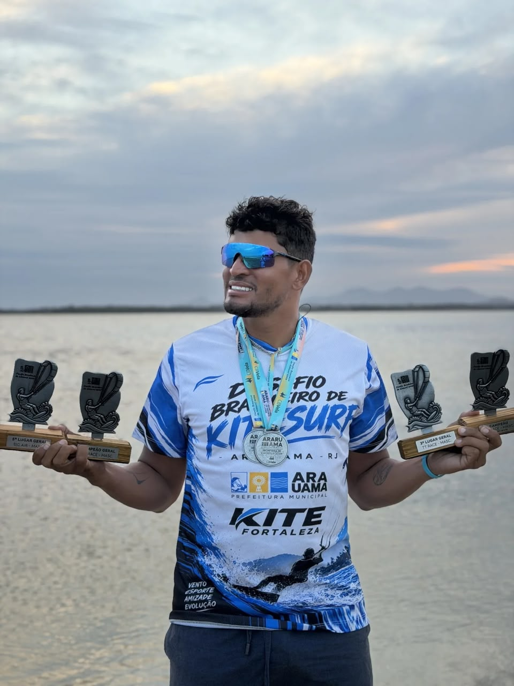
RAUL · ATLETA E INSTRUTORMinha história com o kitesurf começou aos 13 anos de idade. Desde então, o vento e o mar se tornaram parte da minha vida.
Ao longo de 17 anos de carreira, conquistei diversos títulos estaduais e nacionais, construindo minha trajetória como atleta profissional e instrutor de kitesurf.
Sou local da Prainha, em Aquiraz, Ceará, mas também percorro o litoral cearense em busca das melhores condições de vento para proporcionar experiências de aprendizado e evolução aos meus alunos.
Mais do que ensinar uma modalidade esportiva, meu objetivo é compartilhar minha experiência, desenvolver habilidades e ajudar cada aluno a evoluir no kitesurf.
QUERO APRENDER COM RAULPARA QUEM ESTÁ COMEÇANDO
PARA QUEM QUER EVOLUIR
PARA QUEM AMA O MAR
SUA JORNADA NO KITE
O aprendizado acontece etapa por etapa. A aula é alinhada ao seu nível, aos seus objetivos e às condições do dia.
Conheça o equipamento, o ambiente e os fundamentos para começar com consciência.
BASE & SEGURANÇADesenvolva familiaridade com a pipa e entenda como vento e movimento trabalham juntos.
CONTROLE & TÉCNICALeve o que aprendeu para a prática, construindo confiança de acordo com sua evolução.
PRÁTICA & EVOLUÇÃOIdentifique seus próximos objetivos e siga desenvolvendo sua experiência no esporte.
SEU PRÓXIMO NÍVELO conteúdo e a progressão são definidos conforme o nível do aluno e as condições do vento.
ESCOLHA SEU CAMINHO
Ainda não sabe qual opção combina com você? Conte seu objetivo e converse com Raul para entender o melhor próximo passo.
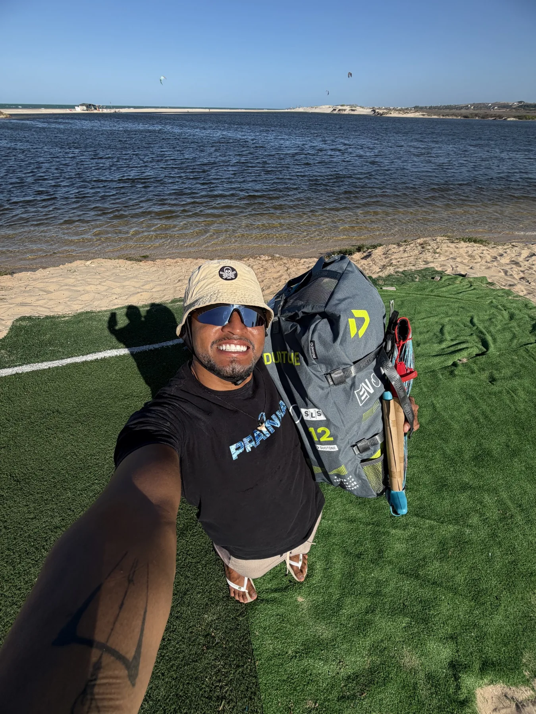
PRIMEIROS PASSOSPara quem quer conhecer o esporte, entender os fundamentos e começar a construir sua relação com o kite.
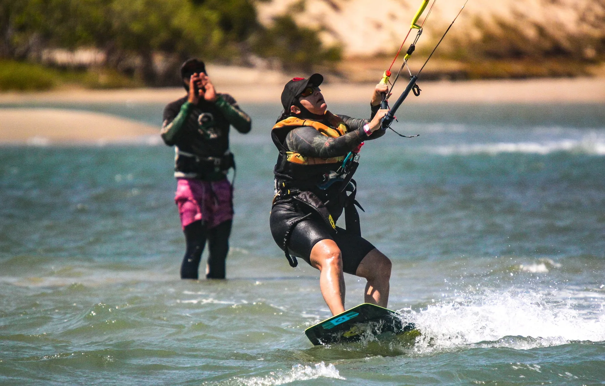
GANHE CONFIANÇAPara quem já teve contato com o kitesurf e deseja trabalhar controle, técnica e consistência.
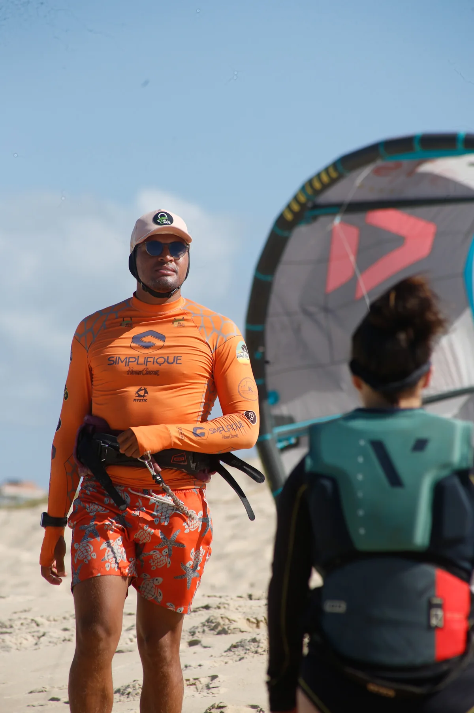
OBJETIVO INDIVIDUALConverse com Raul sobre sua experiência e o que deseja desenvolver para consultar uma proposta adequada.
Valores e disponibilidade
Consulte diretamente com Raul. A duração, os valores e os detalhes da aula são confirmados antes do agendamento.
PRAZER, EU SOU O RAUL
O kitesurf é feito de vento, técnica, paciência e conexão com a natureza. É uma jornada de aprendizado contínuo — e cada sessão traz algo novo.
Quero compartilhar essa paixão e ajudar você a encontrar seu próprio caminho no esporte, seja no primeiro contato com o kite ou na busca por evolução.
Vamos conversarVIDA NA ÁGUA
Momentos reais de treino, mar, equipamento e pessoas que compartilham a paixão pelo kitesurf.
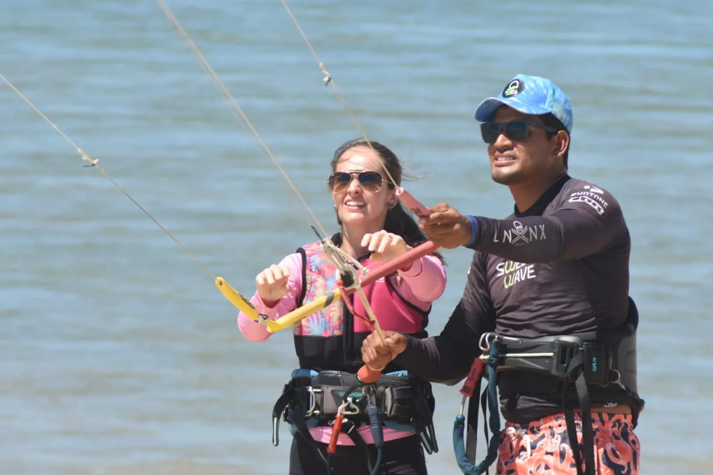
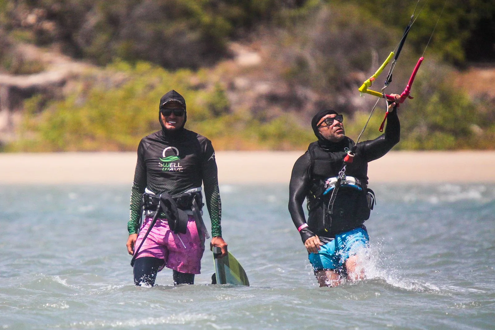
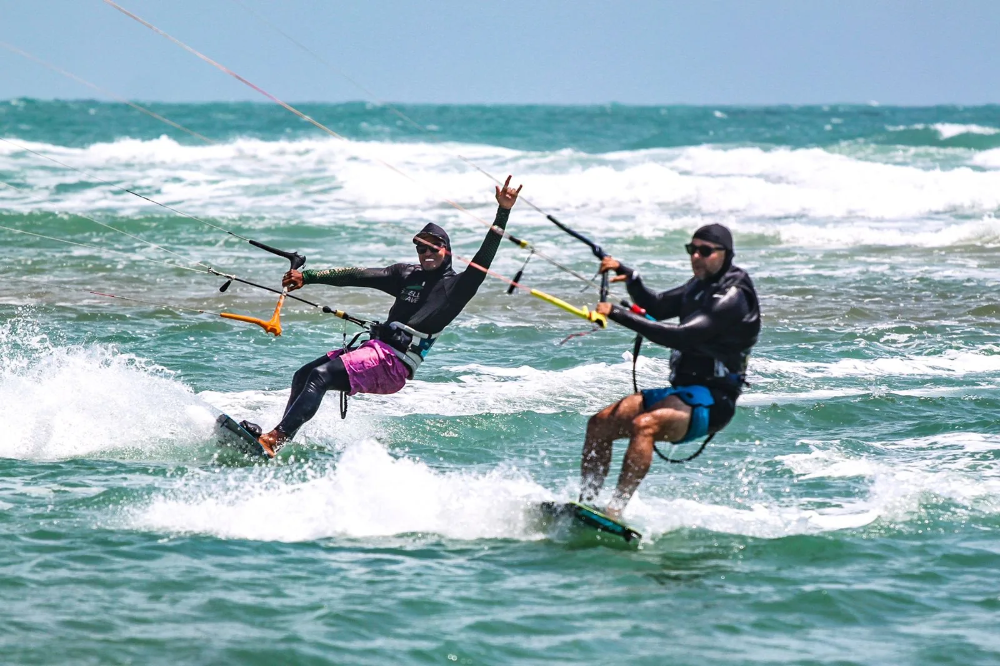
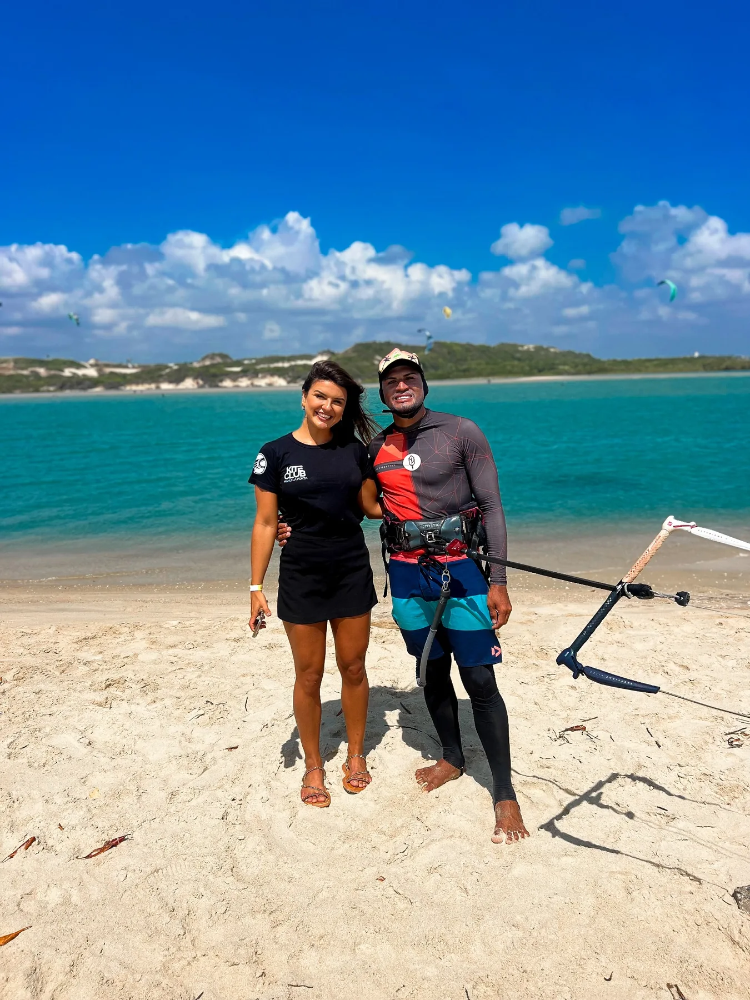
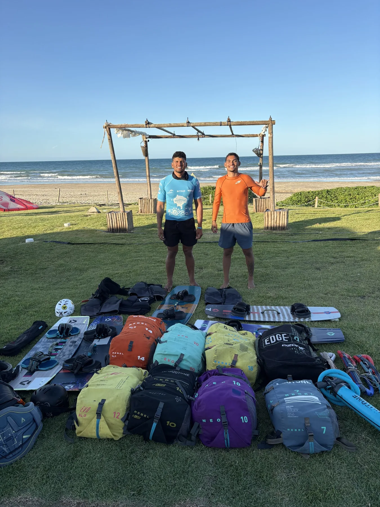
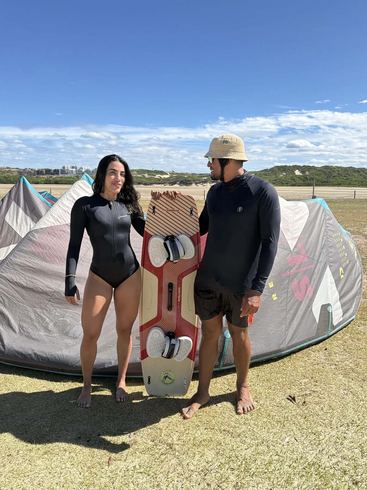
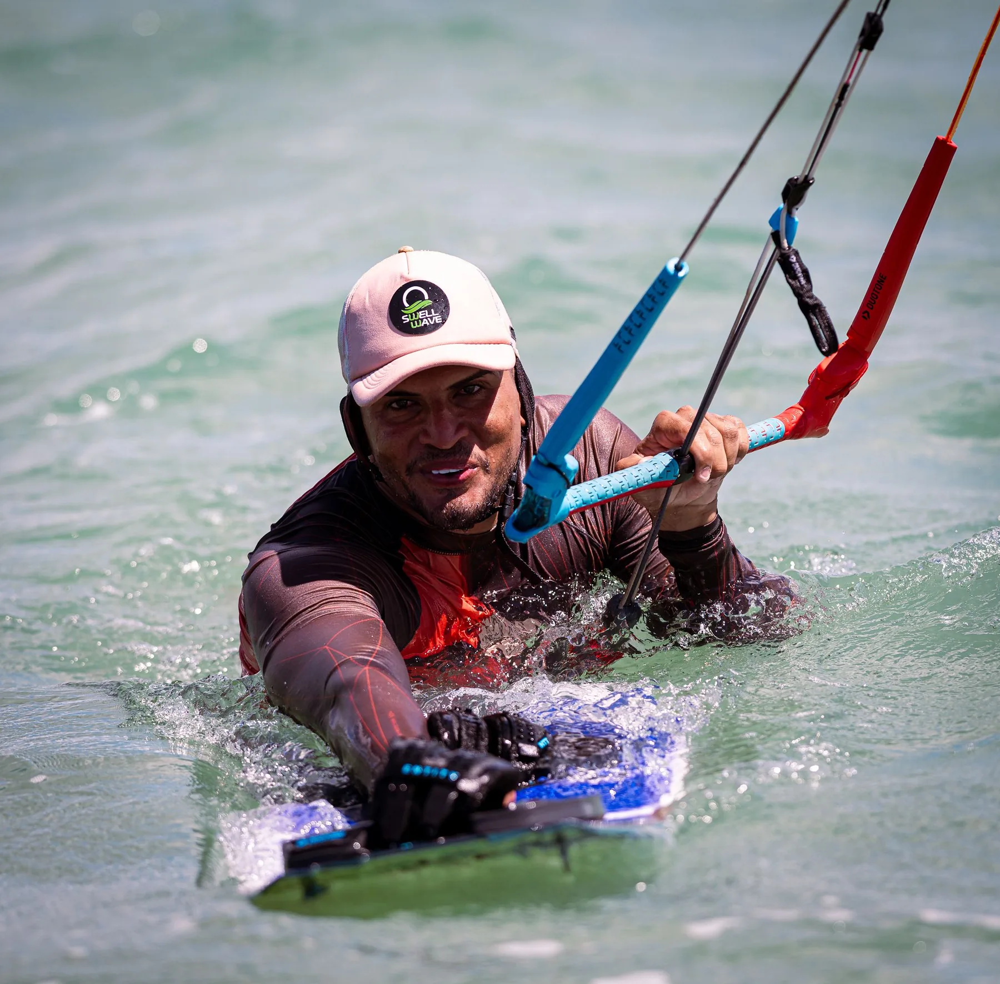
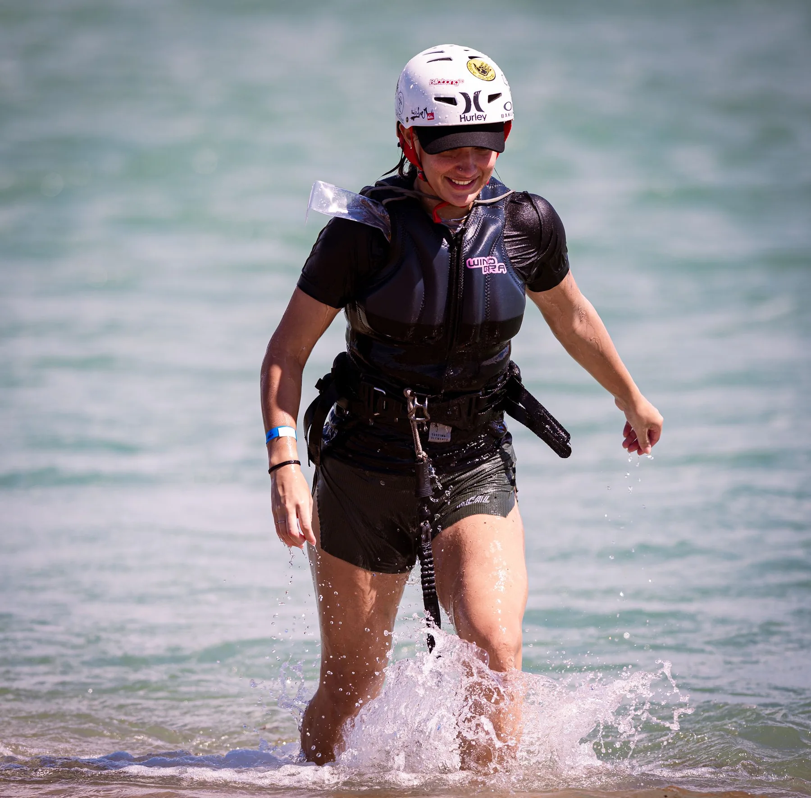
SEU PRÓXIMO PASSO
Preencha seus dados e conte qual experiência procura. A solicitação será preparada para conversar com Raul e confirmar valores, disponibilidade e próximos passos.